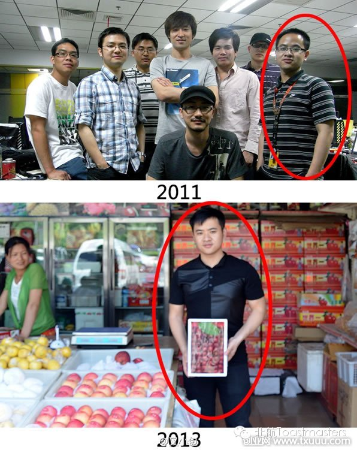
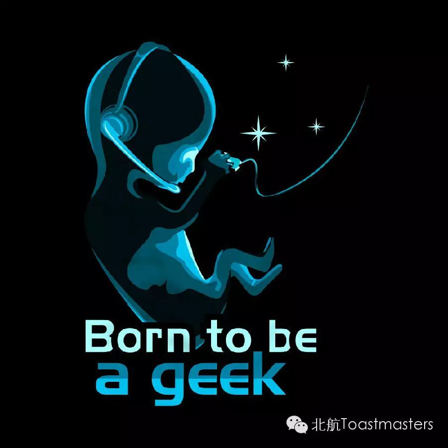

Venue: Room A212, New Main Building, Beihang University
Toastmaster: Jason
General evaluator: Deron
Table topics
Table Topic Master: Junyar
Table Topic Evaluator: Monk

Hi guys, people say that May and July is the season of beer and tear, because we are going to graduate from this school, where we have been living for two years and even longer. At the meantime, the conflicts between job and dream are pressing and need to be looked at by almost everybody. So today we will talk about them and actually it will be the first time for Junyar, our new member, to take the role of TTM. I believe those question must be very interesting. Are you ready to take them?
Prepared Speech
CC5 Speaker: Keven
Evaluator: Peter
What Does a Geek Look Like

For such a long time, geeks are always as mysterious as hackers. They can be anybody and they can be everywhere. Probably someone you know is actually a geek but yourself without any awareness about it. But don’t worry, because today Keven will tell us what a geek looks like. I am sure you will recognize geeks around you after this meeting.
====分=====割=====线====
老朋友：点击右上角按钮分享到朋友圈
新朋友：点击标题下方的【北航Toastmasters】关注我们查看历史消息
北航Toastmasters专注于提升演讲能力和领导能力。这是一个增强自信、促进个人成长的舞台。
每周五19:30在北航新主楼A212举办meeting.
我们欢迎每一个感兴趣的朋友前来做客!
路线：回复r即可查看路线地图